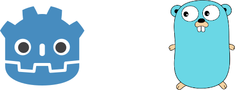

Introducing godot-go: Go Bindings for Godot

I’ve been using a lot of Go in my day to day job. I also have a strong love for open-source software community as almost all the software I depend on comes from the open-source community.
This brings me to introduce my new project godot-go; Go bindings for the Godot game engine. I hope I can pull together a community to bring live into the project.
This is the accummulation of a year woth of my off-hours software development time trying to get Cgo and Godot to work nicely together. I’d like to give thanks to an existing ShadowApex/godot-go project for providing inspiration for me to get my project off the ground.
Please download and kick all the tires! I would rather see a flood of issues come in as opposed to nothing. If you have any questions, join us in the #gdnative-dev room on Discord and add me (surgical#3758) as a friend.
I plan to create a series of blog posts following the development of the project.